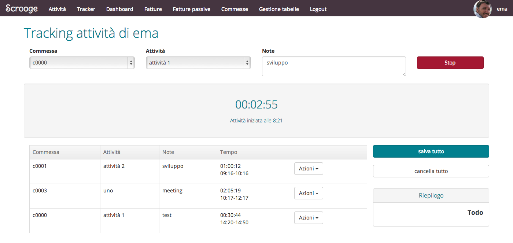
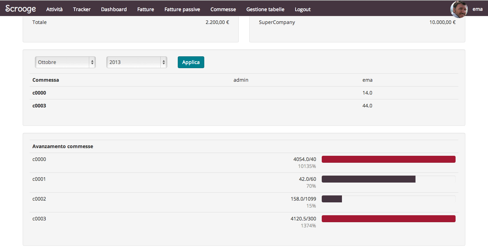
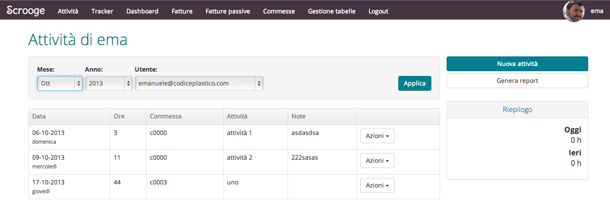
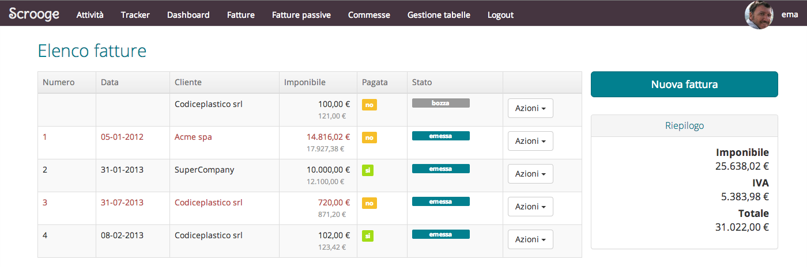
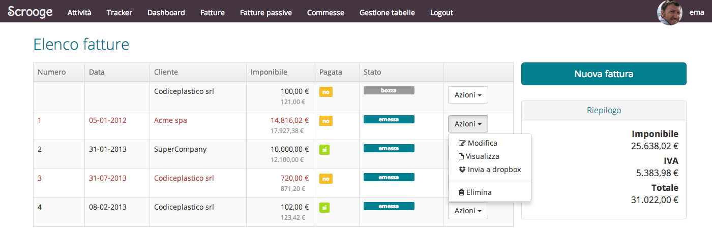

Welcome to Scrooge
This is a simple invoice and tracking application suited for small companies.
What can you do with scrooge?
- Tracking your daily job activities
- Managing the job orders and checking their status
- Creating an invoice
- Generate a pdf-invoice
- Tacking expenses
- Tracking invoice payment status
- View the current status (economics, in/out)
- Managing users
- Managing customers
- Real-time activity tracker
- (NEW)Expense manager
- Multilanguage support throught i18n (Italian, English)
It's built on Rails 4.0.
You can find a live demo: http://plasticscrooge-demo.herokuapp.com/ Use this credentials:
user: demo@codiceplastico.com
pwd: demopwd
Installation
- Clone the repository
- Install the gems with
bundle install - Setup the database
rake db:migrateandrake db:seed - Start the server
rails s
Configuration
There are some settings to setup for dropbox and others information These are:
- IBAN the bank account number
- FISCAL_YEAR the default year
- DROPBOX_ENABLED (true or false) enable and disable dropbox service
- DROPBOX_APP_KEY
- DROPBOX_APP_SECRET
- DROPBOX_TOKEN
- DROPBOX_SECRET
- DROPBOX_FOLDER
- DROPBOX_APP_MODE
To obtain the keys for DROPBOX you can read this http://ema.codiceplastico.com/blog/2013/03/22/usare-dropbox-da-unapplicazione-rails/
Version history
- 11-04-2013 Drop 1 (first release with basic functionalities)
- 10-09-2013 Drop 2 (migrated to Rails 4.0 and Ruby 2.0)
- 02-10-2013 Drop 3 (Activity tracker and bug fixes)
- 11-10-2013 Drop 4 (new design based on Boostrap 3.0)
- 28-12-2013 Drop 6 ()
- 18-04-2014 Drop 7 (Expenses module. Track activity expenses)
- 19-04-2014 Drop 8 (Added mini charts in dashboard (using [http://charts.brace.io/](http://charts.brace.io/)))
Screenshots







